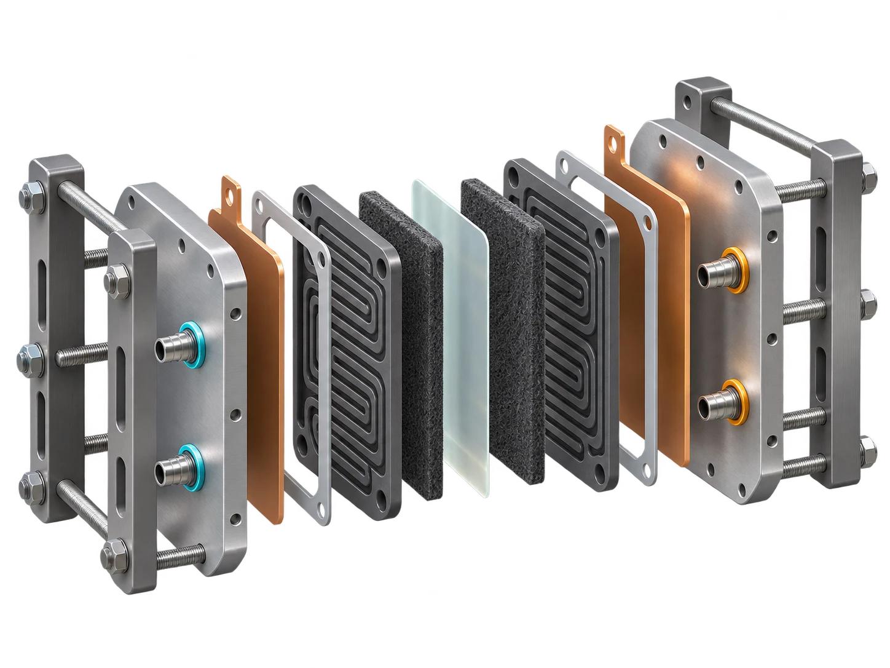
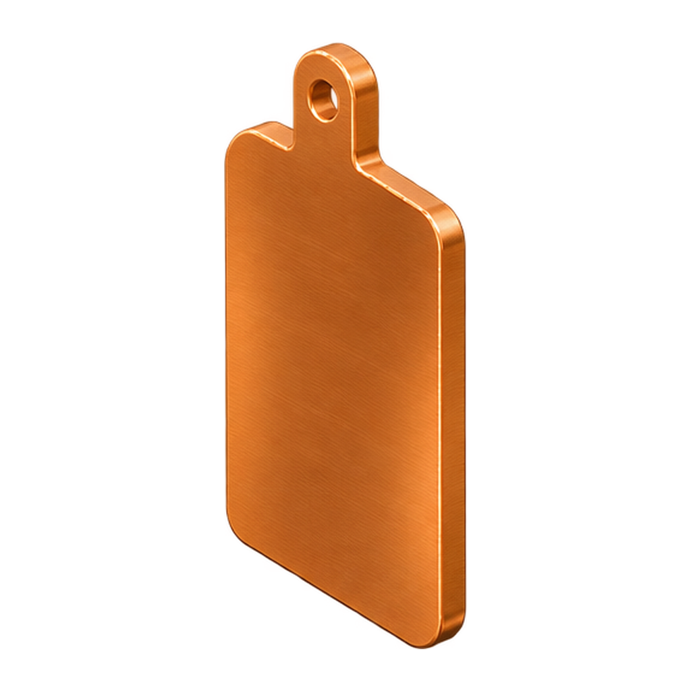
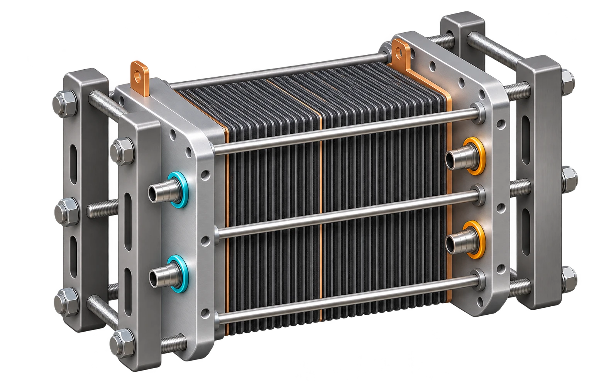
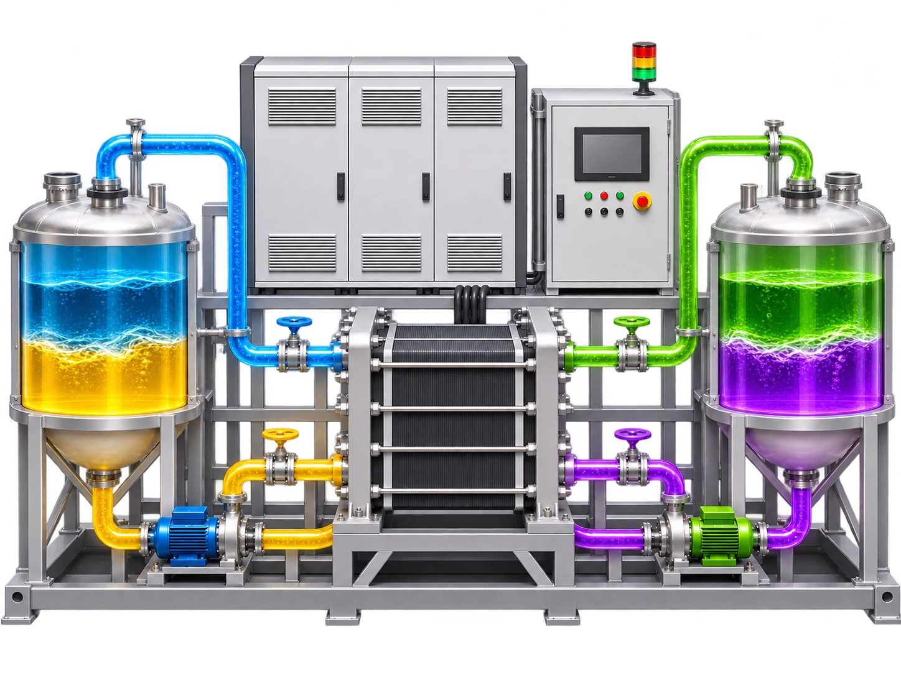

从单个单电池到储能电站
一套 VRFB 由三部分拼装而成：把化学能转换为电流的电堆、储存化学能的储液罐，以及在两者之间输送液体和电子的辅助系统（泵、管路、电力电子和控制）。电堆决定以千瓦计的功率；储液罐决定以千瓦时计的能量；二者可以独立设计。[2][4]

在电堆内部，每个单电池都是一个三明治结构：隔膜夹在两片碳毡电极之间，每片碳毡背后是一块双极板。单电池在电路上串联、在液路上并联，由贯穿整个电堆的公共流道供液。[4]
电堆，逐层拆解
在首页点击任一部件即可查看相同的规格。数值为所引综述中的典型值；具体产品会有差异。
端板
集流体

带有接线极耳的铜板，把整个电极面积上的电流汇集起来。它位于第一块双极板之后、保持干燥，因为铜在酸性电解液中会迅速腐蚀。
- 材料
- 铜板，1–3 mm，有时镀层
- 电阻率
- 1.7 × 10⁻⁸ Ω·m
- 数量
- 每个电堆两片（正负极端子）
来源 [4]
流道框架与密封垫
双极板
负极（碳毡）
离子交换膜
正极（碳毡）
拉杆与夹紧支架

辅助系统

| 部件 | 作用 | 典型规格 |
|---|---|---|
| 电解液储液罐 | 储存能量；容积决定放电时长 | HDPE/PP 或内衬钢罐；负极罐充氮保护；总计 ≈ 40 L/kWh[2][5] |
| 泵（每回路一台） | 以 5–10 倍化学计量流量循环电解液 | 磁力驱动离心泵，过流部件 PP/PVDF；寄生损耗占吞吐电量的 2–5 %[14] |
| 管路与阀门 | 连接储液罐、泵与电堆公共流道 | PVC/PP/PVDF；回路按颜色区分以防接错 |
| 功率变换系统 | 直流 ⇄ 交流变换，与电网同步 | 双向逆变器，单向效率 96–98 %[5] |
| 电池管理系统 | SOC 估算、泵调度、保护、再平衡 | 开路电压参比电池、温度和液位传感器[14][16] |
| 换热器 | 把电解液保持在 10–40 °C 窗口内 | 炎热气候下必需；常为液-气式[11] |
电堆如何失效，如何维护
- 泄漏：密封垫蠕变或夹紧不均所致，是最常见的现场故障；重新拧紧或更换密封垫即可修复。[14]
- 隔膜污染或降解：多年运行后电阻升高；通常在 10–15 年的电堆翻新时更换隔膜。[5][14]
- 容量衰减：由渗透和副反应造成，通过再平衡电解液修正，而不是更换电解液。[16]
- 泵与密封件磨损：辅助系统的常规工业维护。
由于电解液在寿命终止时可以回收，VRFB 电站保留着锂离子系统所没有的残值。这对经济性很重要，将在下一支柱中讨论。